Explicabilidade em Inteligência Artificial
A Inteligência Artificial Está Transformando o Mundo
Sistemas inteligentes já auxiliam decisões em saúde, finanças, indústria, transporte e em nosso cotidiano.
Entretanto, muitos modelos modernos, especialmente redes neurais profundas, operam como verdadeiras caixas-pretas: produzem excelentes resultados, mas raramente explicam como chegaram às suas conclusões.
Alta precisão sem transparência pode ser insuficiente em aplicações críticas.
Por que transparência é crucial?
- Construir confiança entre usuários, especialistas e organizações;
- Em domínios críticos, precisão sozinha não é suficiente.
- Profissionais precisam compreender o raciocínio da IA.
- Saúde, finanças e direito exigem transparência.
- Detectar erros, viés e comportamentos inesperados;
- Atender exigências regulatórias, éticas e legais;
- Regulações como FDA e EU AI Act reforçam essa necessidade.
- Permitir auditoria, validação e melhoria contínua.
Exemplo: um sistema que detecta câncer precisa justificar quais padrões histológicos levaram ao diagnóstico.
Problema das Caixas-Pretas
Modelos complexos oferecem alta performance, mas baixa transparência.
Isso dificulta decisões críticas em saúde, finanças e justiça.
Objetivos
Tornar previsões e comportamentos dos modelos compreensíveis para humanos.
Interpretabilidade ≠ Explicabilidade
Interpretabilidade: compreensão direta
- Entendimento direto do modelo.
- Sem ferramentas auxiliares.
- Ex.: Árvores de decisão, regressão linear.
Explicabilidade: mecanismos auxiliares de explicação
- Explicações pós-hoc.
- Ex.: LIME, SHAP, Grad-CAM.
- https://github.com/deel-ai/xplique
- Necessária para caixas-pretas.
Redes neurais profundas geralmente são explicáveis, mas não interpretáveis.
Taxonomia
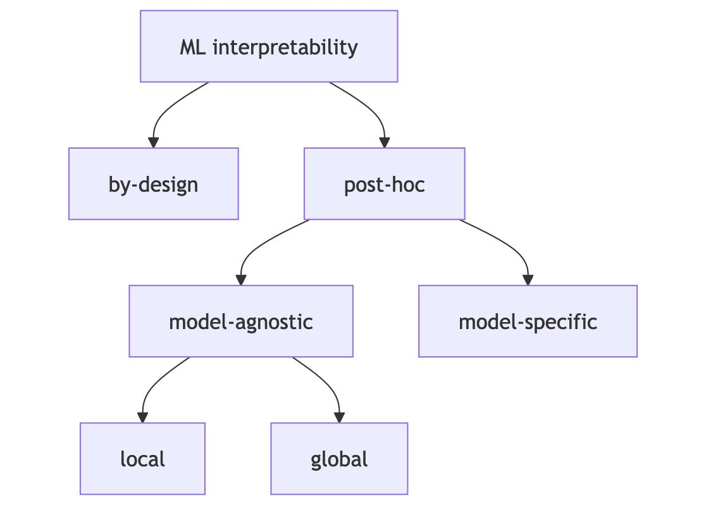
- Por design - modelos inerentemente interpretáveis, ex: regressão logística
- post hoc - método de interpretabilidade após o treinamento do modelo.
- Dependentes do modelo: características aprendidas por uma rede neural
- ou independentes:
- local (previsões específicas) vs global (dados)
Interpretável por design

- Regressão linear
- Árvores de decisão
- Regras de decisão
- Programação genética
Programação genética: Interpretabilidade por design
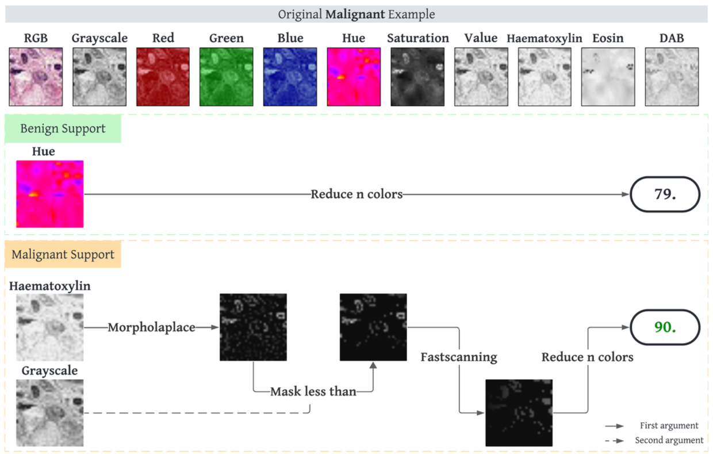
- Modelos compostos por operações legíveis.
- Cada passo pode ser auditado.
- Permite rastrear toda a decisão.
Sylvain Cussat-Blanc et al., On Interpretability in Multimodal Biomedical Image Analysis, Genetic Programming Theory and Practice XXI.
Níveis de interpretabilidade
- Todo o modelo
- Modelos pequenos, simples...
- Partes do modelo
- Coeficientes, algumas regras - decomposabilidade
- As saídas do modelo
- KNN: mostrar dados da mesma classe da entrada
Interpretabilidade post-hoc
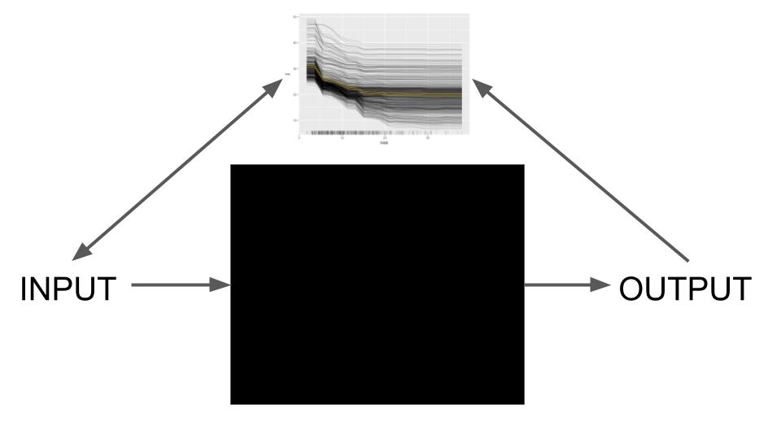
- Utilizado após o modelo é treinado
- Modelo de um modelo - erro do erro?
- Agnóstico ao modelo (imagem de cima)
- Específico do modelo
Métodos Pós-Hoc Model-Agnostic
Métodos model-agnostic podem explicar qualquer modelo de Machine Learning, independentemente da arquitetura utilizada.
- Aplicáveis a modelos de caixa-preta.
- Aplicáveis e a modelos interpretáveis por design
- Separados em métodos locais e globais.
- Extremamente versáteis.
Métodos Locais
Explicam uma única predição.
Respondem à pergunta: "Por que o modelo tomou esta decisão específica?"
- Foco em uma instância individual.
- Ideal para auditoria e análise de casos.
- Essencial em aplicações críticas.
RISE — Randomized Input Sampling for Explanation
Explica decisões de modelos visuais aplicando máscaras aleatórias sobre a imagem de entrada e observando como a predição é afetada.
- Aplica cada máscara à imagem original.
- Mede a probabilidade da ação ou classe de interesse.
- Combina os resultados pela média ponderada em um mapa de saliência usando as probabilidades produzidas pelo modelo.
Se ocultar uma região reduz significativamente a confiança, essa região é importante para a decisão.
Exemplo - RISE
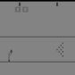
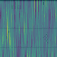
Christina Berghegger et al., Analyzing Interpretable Visual Control Policy Search and Synthesis. ACM Trans. Evol. Learn. Optim., Qualis A2
Técnicas para Redes Neurais
- Grad-CAM
- Saliency Maps
- Concept Activation
- Adversarial Examples
- Influential Instances
Grad-CAM
Utiliza os gradientes de qualquer conceito-alvo que chegam à camada convolucional final para destacar as regiões importantes da imagem para a previsão.
Exemplos Adversariais
Pequenas perturbações podem enganar redes neurais.
- Revelam vulnerabilidades.
- Importantes para robustez.
Exemplo: Grad-CAM
- Grad-CAM destaca regiões relevantes em imagens.
- Mostra onde a rede olhou.
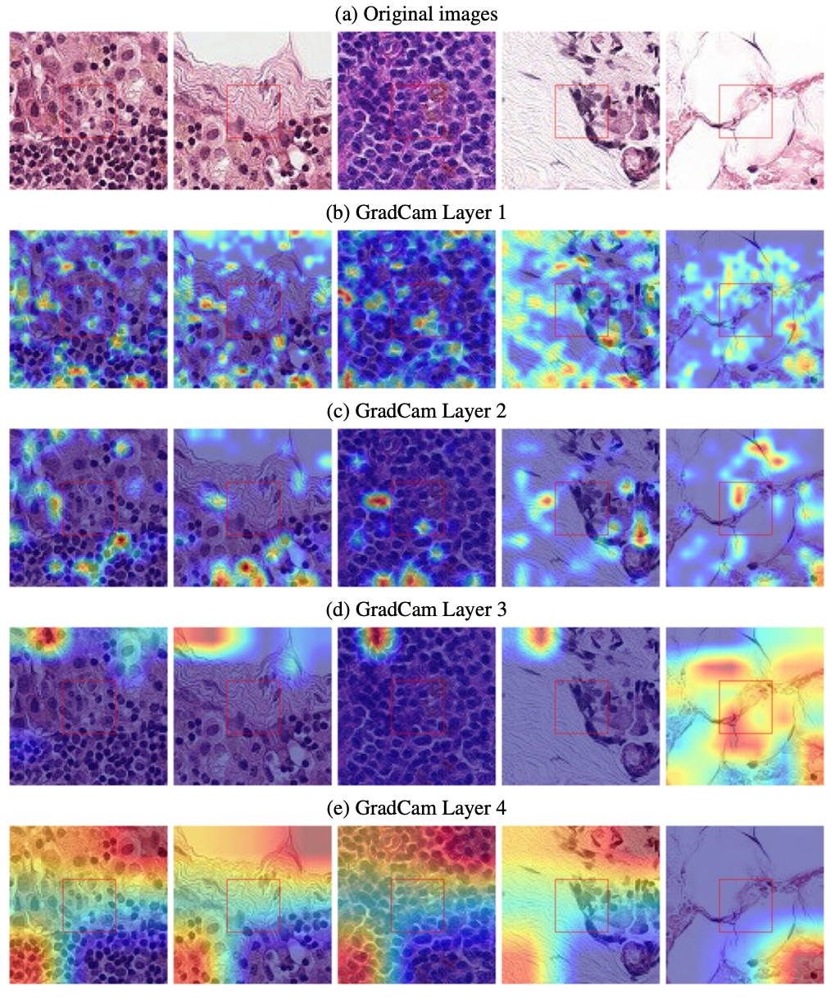
Atenção visual não equivale a raciocínio clínico.
Sylvain Cussat-Blanc et al., On Interpretability in Multimodal Biomedical Image Analysis, Genetic Programming Theory and Practice XXI.
Métodos Globais
Explicam o comportamento médio do modelo.
Respondem à pergunta: "Como o modelo funciona em geral?"
PDP — Partial Dependence Plot
- Mostra efeito médio de uma variável.
- Marginaliza as demais variáveis.
- Fácil interpretação.
Ideal para identificar tendências globais.
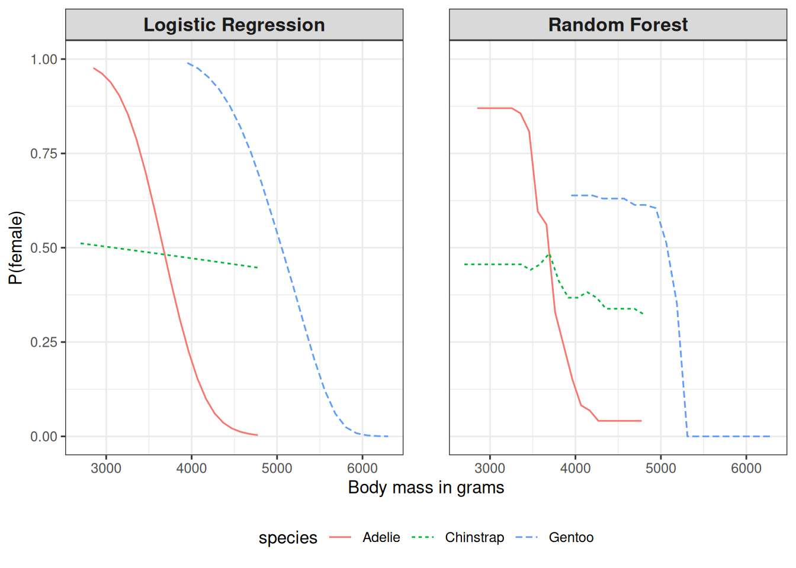
Interpretabilidade é Relativa
Depende de:
- Conhecimento do usuário
- Contexto da aplicação
- Nível de detalhe necessário
Desafio
Não existe uma única definição universalmente aceita.
Ganhos da interpretabilidade
1. Verificação
Garantir que o modelo funciona conforme esperado.
2. Aprendizado Científico
Extrair conhecimento sobre o fenômeno estudado.
3. Descoberta de Conhecimento
Identificar padrões desconhecidos nos dados.
4. Tomada de Decisão
Permitir que humanos confiem e utilizem previsões com segurança.
Simulatabilidade
Um modelo é simulável quando um humano consegue reproduzir mentalmente sua decisão.
- Entrada → Processamento → Saída
- Sem auxílio externo.
- Em tempo razoável.
Árvores pequenas são altamente simuláveis. Redes profundas não são.
Decomponibilidade
Capacidade de dividir o modelo em partes compreensíveis.
- Funções individuais.
- Fluxo de dados.
- Decisões intermediárias.
Programação genética: simulabilidade e decomposabilidade
- Pequeno - podemos memorizar e "processá-los"
- Dois grafos de decisão - decomposabilidade
Programação genética é interpretável por design, certo?
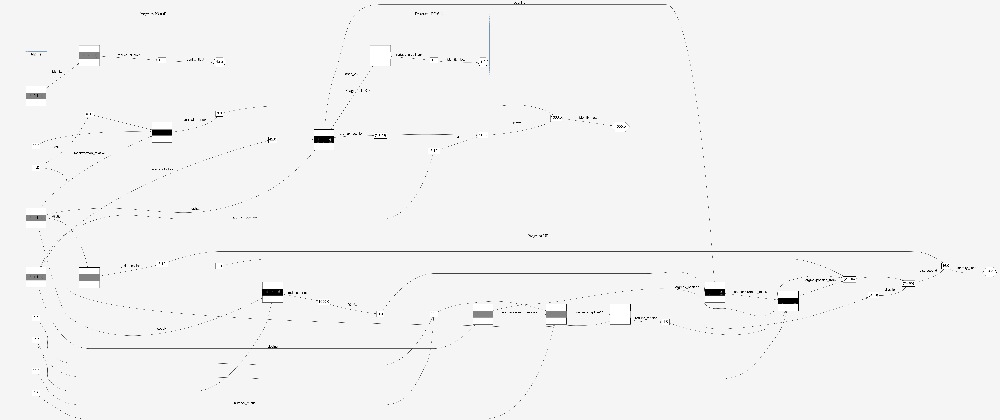
ACTIONS = [0,1,2,3]
function evolved_policy_bowling(frame1, frame2, frame3, frame4)
# OUTPUT NOOP
output_noop = reduce_ncolors(frame2)
# OUTPUT FIRE
remove_top_bottom = maskfromto(frame4, exp(-1.0), 60.0)
exponent = vertical_argmax(remove_top_bottom) # has the player reach the top ?
# normally the exponent will be one if the player hasn't, 3 otherwise
n_diff_pixel_values = reduce_ncolors(frame1)
details = tophat(frame4, n_diff_pixel_values,) # big Kernel => makes pins salient
whitest_pixel = argmax_position(details) # usually the pins
whitest_pixel_orig_frame1 = argmax_position(frame1) # usually the head of the player
dist_player_pins = dist(whitest_pixel_orig_frame1, whitest_pixel)
output_fire = dist_player_pins^exponent
# OUTPUT UP
blackest_pixel = argmin_position(dilation(frame4))
constant_coordinate = (27, 84) # last pixel
closed_frame1 = closing(frame1)
player = argmax_position(closed_frame1)
player_vector = direction(player, constant_coordinate) # player to bottom_left
output_up = dist_second(player_vector, blackest_pixel) # compare horizontal coordinate for both
# OUTPUT DOWN
output_down = 1.0
outputs = (output_noop, output_fire, output_up, output_down)
return ACTIONS[argmax(outputs)]
END
Christina Berghegger et al., Analyzing Interpretable Visual Control Policy Search and Synthesis. ACM Trans. Evol. Learn. Optim., Qualis A2
Regressão Linear
Regressão Linear
Utilizada para encontrar uma relação linear entre uma variável alvo e um conjunto de atributos.
Objetivo
Modelar matematicamente a relação entre as entradas e a saída.
Hipóteses
- A variável alvo deve ser uma combinação linear das features.
- As variáveis explicativas devem seguir, idealmente, uma distribuição normal.
Tipos de Regressão Linear
Linear simples
Utiliza apenas uma variável explicativa.
Linear múltipla
Utiliza múltiplas variáveis.
Regressão linear simples
Encontrar os coeficientes a e b que minimizem o erro entre um alvo \(Y \in \mathbb{R}^N\) que seja linearmente dependente de um dado observacional \(X \in \mathbb{R}^{Nx1} \) independente
\(Y = aX + b\)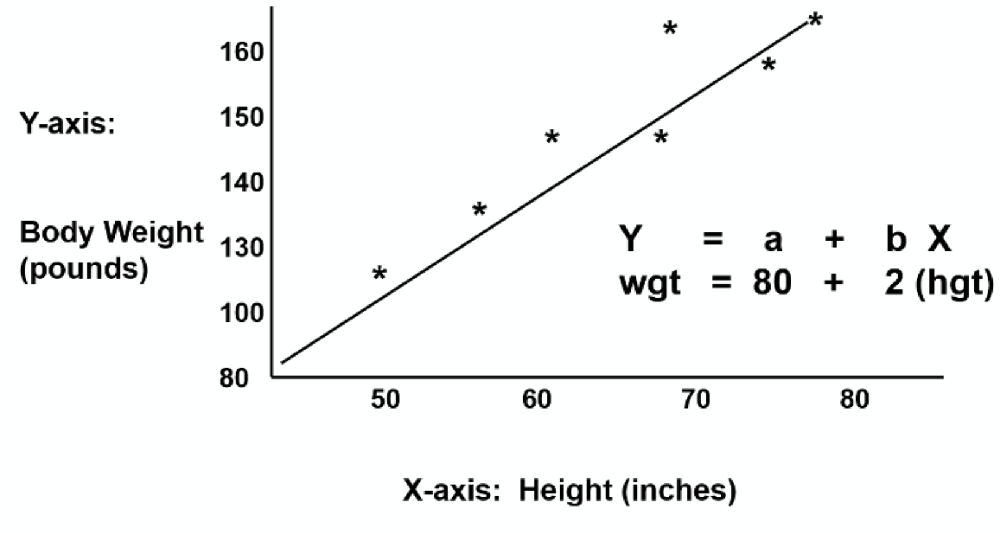
Regressão linear múltipla
Generalização da regressao linear simples para múltiplas variáveis \(X \in \mathbb{R}^{Nxd} \)
\(Y = \beta_0 + \beta_1 X_1 + \beta_2 X_2 ... + \beta_d X_d + \epsilon \)Os coeficientes \( \beta \) são obtidos por algum algoritmo de otimização, como o gradiente descendente
Regressão Logística - base
- Aplicação da regressão linear para a classificação binária
- Utiliza uma função sigmóide (logística) para estimar a probabilidade de pertencimento a uma classe
- Saída entre 0 e 1
- Se o valor é 0.5, classe 1
- Senão, classe 0

Regressão Logística
- É uma forma paramétrica de estimar uma distribuição de probabilidades P(Y| X) onde \(Y \in \mathbb{R}^N\) é o espaço a estimar e \(X \in \mathbb{R}^{Nxd}\) é o espaço de atributos
- Podem ser escritos como: \[ P(Y = 1 |X) = \frac{1}{1+exp(\beta_0+\Sigma_{i=1}^{d} \beta_i X_i)}) \] e \[ P(Y = 0 |X) = \frac{exp(\beta_0+\Sigma_{i=1}^{d} \beta_i X_i}{1+exp(\beta_0+\Sigma_{i=1}^{d} \beta_i X_i)}) \]
- Os coeficientes \(\beta_i\) são otimizados para maximizar a semelhança condicional dos dados, ou seja, a probabilidade de existência de uma Observação Y na base de dados
Regressão Logística - multiclasse
- Estratégia "um contra todos"
- Achar um modelo que separe bem 1 classe das demais
- Separação de 3 classes "[green, blue, red]"
- 1 modelo logístico para: green vs [blue+red]
- 1 modelo logístico para: blue vs [green+red]
- 1 modelo logístico para: red vs [blue+gren]
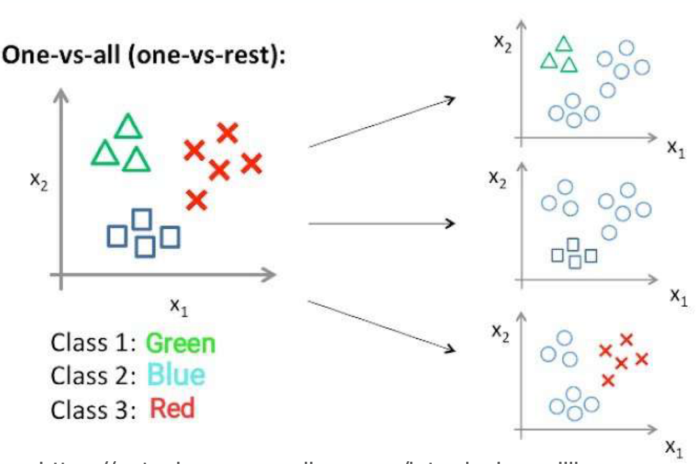
Obtemos uma segmentação do espaço ao combinar os diferentes modelos
Prós e contras
- Prós:
- Facilidade de interpretação
- Eficiente computacionalmente
- Pouco sensível ao sobreajuste
- Não necessita de normalização (transformação dos dados em pré-processamento)
- Contras:
- Supõe linearidade
- Sensível ao desiquilibrio na quantidade de dados por classes
- Performance decai a medida que os dados ficam mais complexos
- Sensível a dados atípicos
Árvores de decisão
Árvores de Decisão
- Explicar um valor a partir de uma série de variáveis discretas ou contínuas.
- Estamos, portanto, diante de um caso muito clássico de matriz X com m observações e n variáveis, associada a um vetor Y a ser explicado. Os valores de Y podem ser de dois tipos:
- contínuos: árvore de regressão
- qualitativos: árvore de classificação
Exemplo - iris
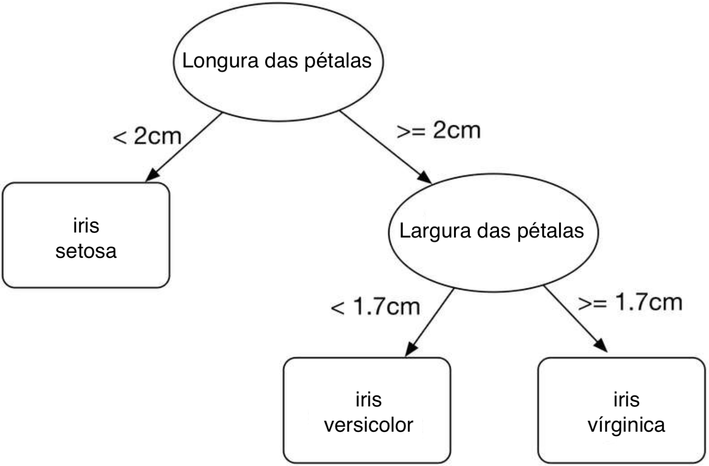
Árvore de Decisão - iris
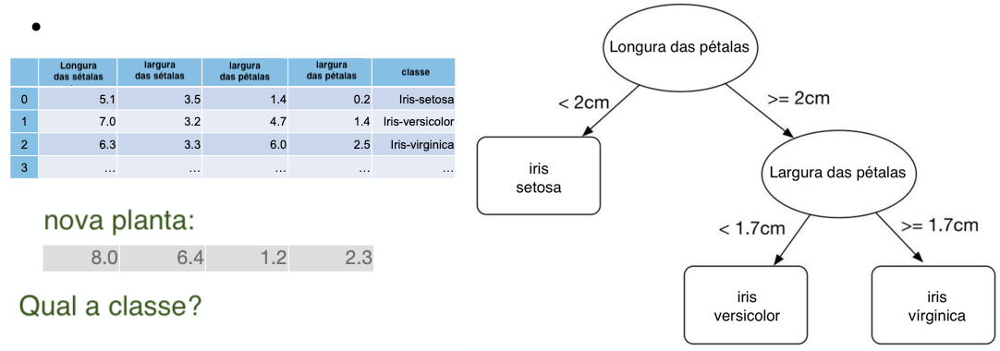
Árvore de Decisão - construção
- Como definir o tamanho da árvore:
Escolher a variável de divisão: selecionando as variáveis, da mais discriminante à menos discriminante
Como lidar com variáveis contínuas: “Dividir” a variável contínua para que seus valores inferiores e superiores caractarizem nós distintos.
encontrar o equilíbrio entre sobreaprendizado e árvore trivial. Processo de pós-poda.
em função des algoritmos CHAID (Chi-2), CART e C4.5 sobre o índice, do gini (índice de concentração) e sobre o conceito de entropia (teoria da informação)
Construção com o Gini
- Cálculo do índice de Gini no conjunto completo: \[ Gini(D) = 1 - \Sigma_{i-1}^k P_i^2 \]
- \( P_i = \frac{Nb_{classe_i}}{Nb_{lines}} \): probabilidade de pertencer à classe i
- O índice de Gini mede, portanto, a incerteza em um conjunto de dados:
- Se for zero, o conjunto tem só uma única classe
- Quanto maior for, mais diversificado o conjunto é em termos de classes
Construção com o Gini
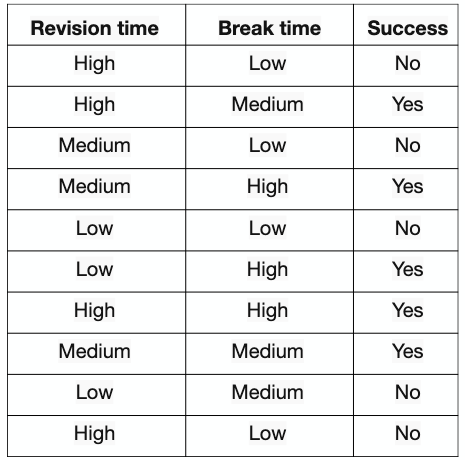
- Calcular o índice para o conjunto todo (successes)
- P(sim)= 5/10
- P(não)= ?/10
- \(Gini(D)= 1 - (5/10)^2 - (5/10)^2\) = ?
Construção com o Gini
- Selecionar o atributo para a divisão
- Calcular o valor Gini ponderado para cada atributo:
- \( Gini_{ponderado}= \Sigma_{j=1}^k \frac{N_j}{N}Gini(j) \)
- onde \(k\) é o número de nós filhos resultante da atribuição
- \(N_j\) é o número de amostras no nó filho
- \(N\) é o número de amostras no nó pai
- \(Gini(j)\) é índice do nó filho \(j\)
- Selecione o atributo com o menor índice
Para o atributo "Revision time"
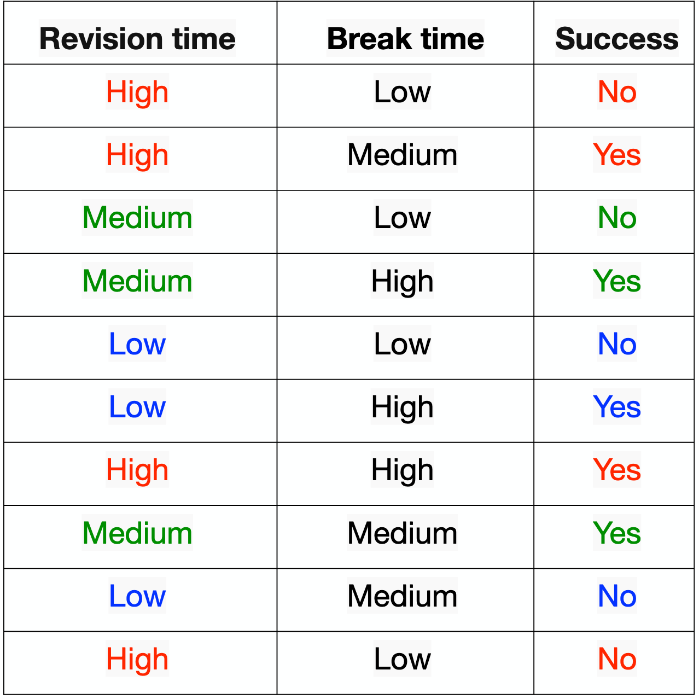
- "High": 4 - \(Gini_{high} = 1 - (2/4)^2 - (2/4)^2 = 0.5\)
- "Medium": 3 - \(Gini_{medium} = 1 - (2/3)^2 - (1/3)^2 = 0.444\)
- "Low": 3 - \(Gini_{low} = 1 - (1/3)^2 - (2/3)^2 = 0.444\)
"Revision time": \( 4/10 * 0.5 + 3/10 *0.444 + 3/10 *0.444 = 0.4664 \)
Para o atributo "Break time"
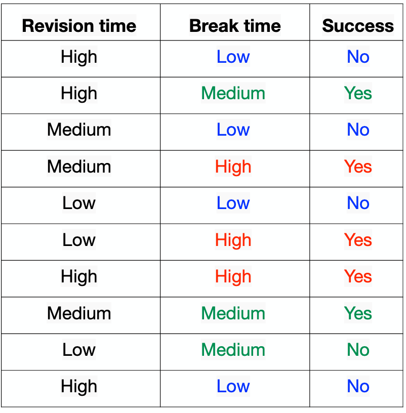
- "High": 3 - \(Gini_{high} = 1 - (3/3)^2 - (0/3)^2 = 0.\)
- "Medium": 3 - \(Gini_{medium} = 1 - (2/3)^2 - (1/3)^2 = 0.444\)
- "Low": 4 - \(Gini_{low} = 1 - (0/4)^2 - (4/4)^2 = 0.\)
"Break time": \( 3/10 * 0. + 3/10 *0.444 + 4/10 *0. = 0.1332 \)
Seleção de atributos - pt. 1
- "Revision time": \( 4/10 * 0.5 + 3/10 *0.444 + 3/10 *0.444 = 0.4664 \)
- "Break time": \( 3/10 * 0. + 3/10 *0.444 + 4/10 *0. = 0.1332 \)
- Selecionamos "Break time", porque ele tem o valor menor.
- O atributo "Low": tem o menor valor, 0. e mais elementos, 4.
Seleção de atributos - pt. 2
- Atribuição de classes por probabilidade de valor
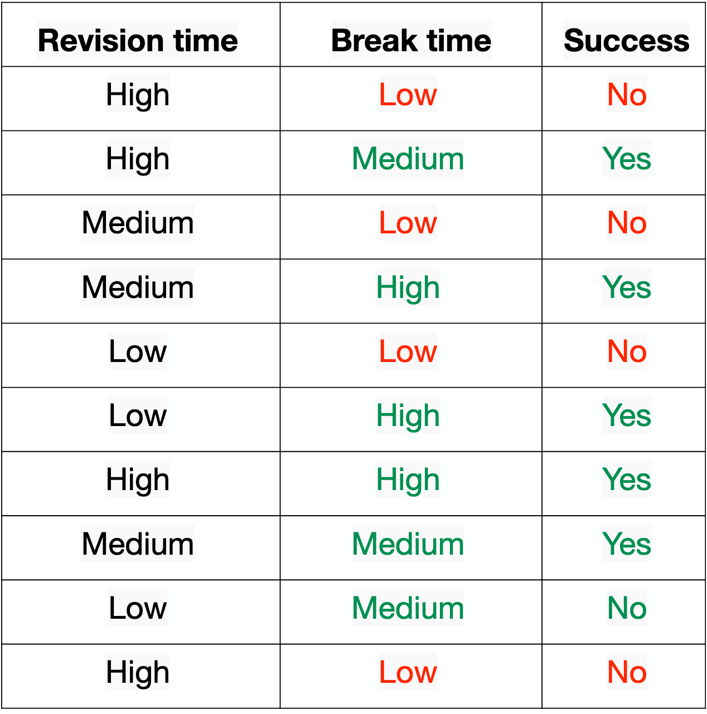
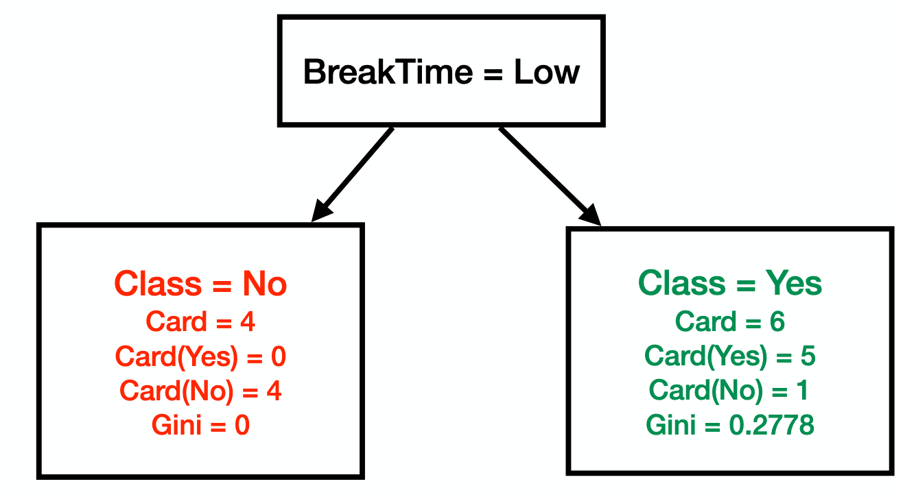
Recomeço - "Class = No" - pt. 1
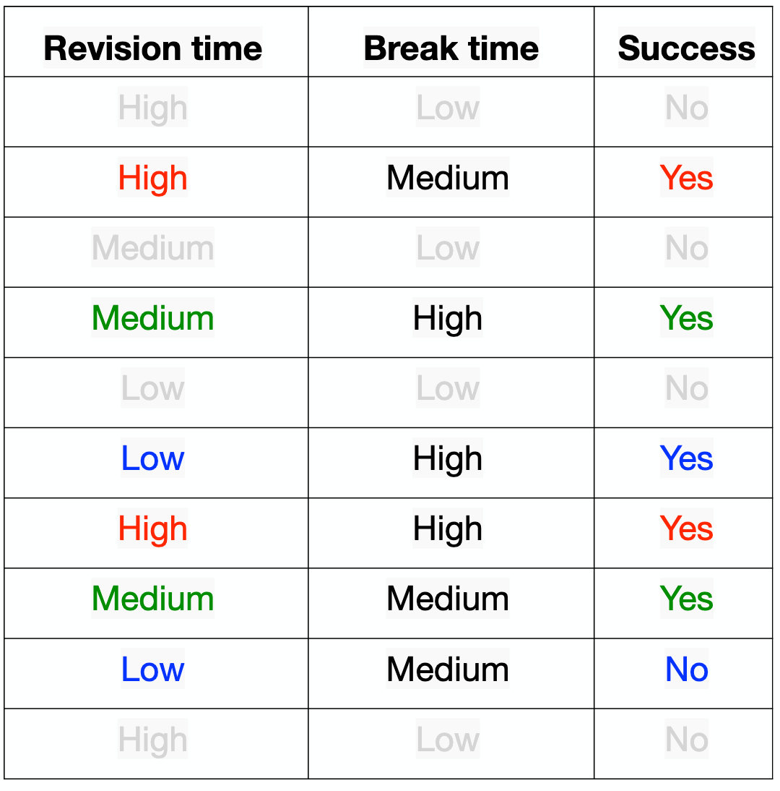
- "High": 2 - \(Gini_{high} = 1 - (3/2)^2 - (0/2)^2 = 0.\)
- "Medium": 2 - \(Gini_{medium} = 1 - (2/2)^2 - (0/2)^2 = 0.\)
- "Low": 2 - \(Gini_{low} = 1 - (1/2)^2 - (1/2)^2 = 0.5\)
Recomeço - "Class = No" - pt. 2
- "High": 3 - \(Gini_{high} = 1 - (3/3)^2 - (0/3)^2 = 0.\)
- "Medium": 3 - \(Gini_{medium} = 1 - (2/3)^2 - (1/3)^2 = 0.444\)
- "Low": 0 - \(Gini_{low} = 1 - (0/4)^2 - (4/4)^2 = 0.\)
Recomeço - "Class = No" - pt. 3
- "Revision time": \( 0.16667 \)
- "Break time": \( 0.2222 \)
Agora, selecionamos "Revision time" - atributo "high"
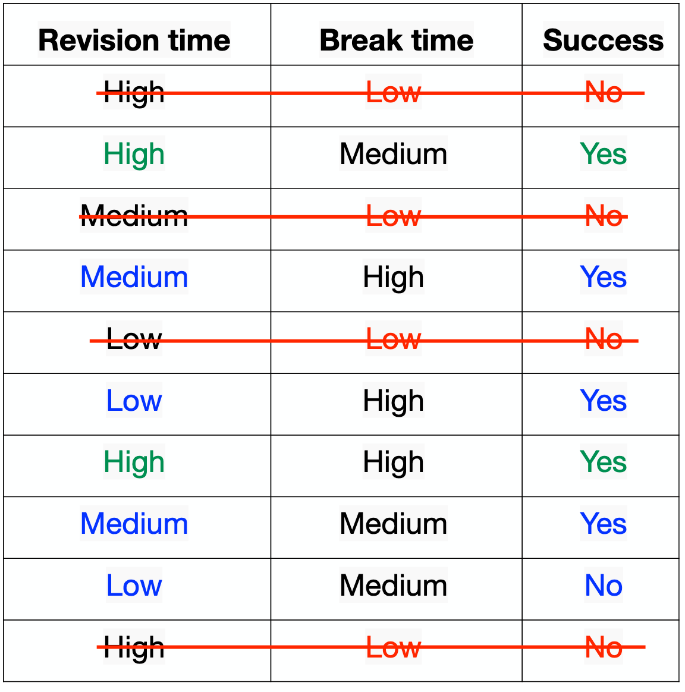
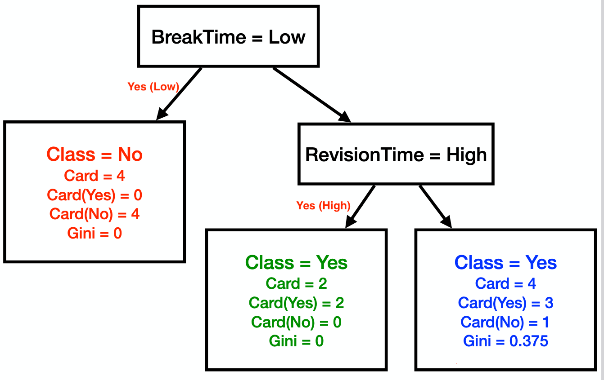
Prós e contras
- Prós:
- Facilidade de interpretação
- Não é necessária normalização
- Tratamento de valores ausentes
- Flexibilidade com tipos de dados
- Contras:
- Forte tendência ao sobreaprendizado
- Instabilidade diante da variabilidade dos dados
- Complexidade computacional
- Sensível ao ruído
Programação genética
REFERÊNCIAS
Molnar, Christoph, Interpretable Machine Learning, https://christophm.github.io/interpretable-ml-book/
Grad-CAM https://arxiv.org/abs/1610.02391
Sylvain Cussat-Blanc et al., On Interpretability in Multimodal Biomedical Image Analysis, Genetic Programming Theory and Practice XXI.
Christina Berghegger et al., Analyzing Interpretable Visual Control Policy Search and Synthesis. ACM Trans. Evol. Learn. Optim., Qualis A2